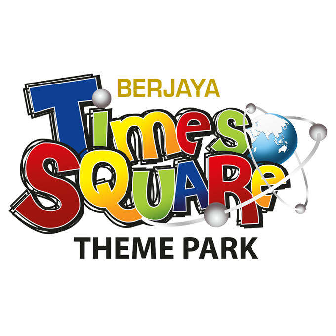
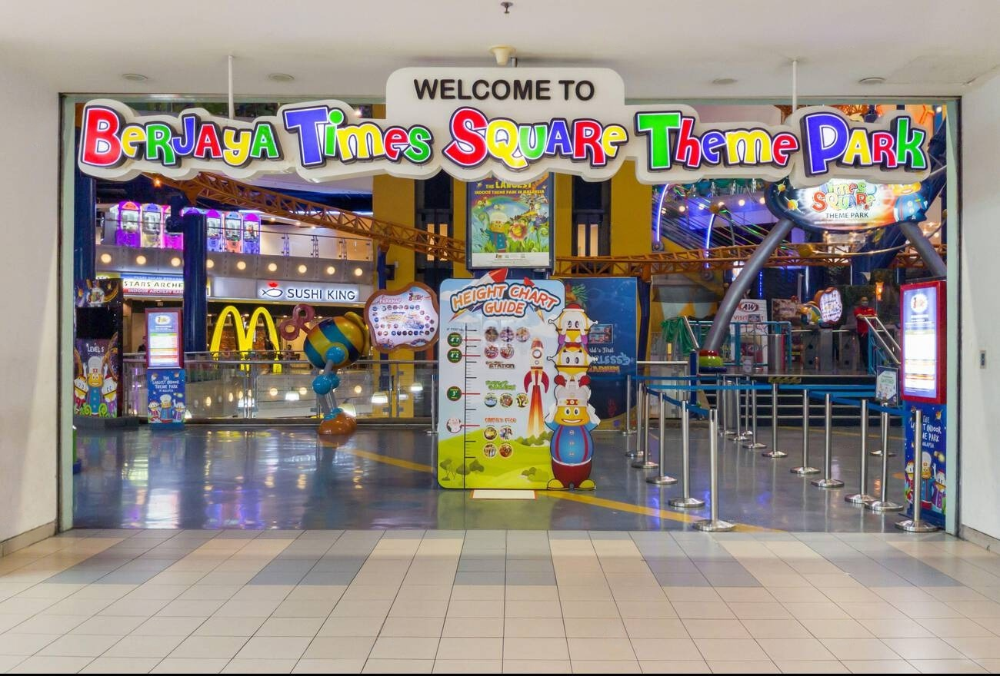
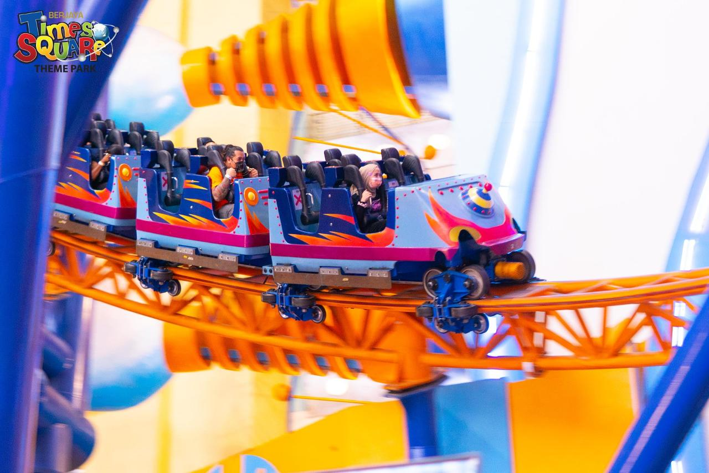
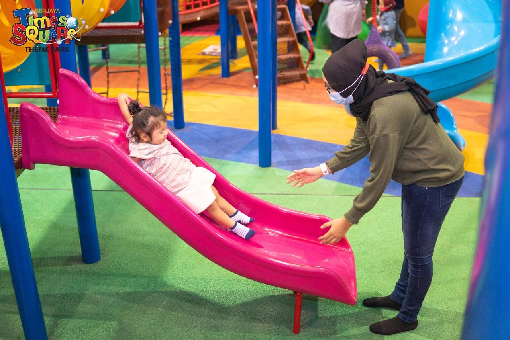
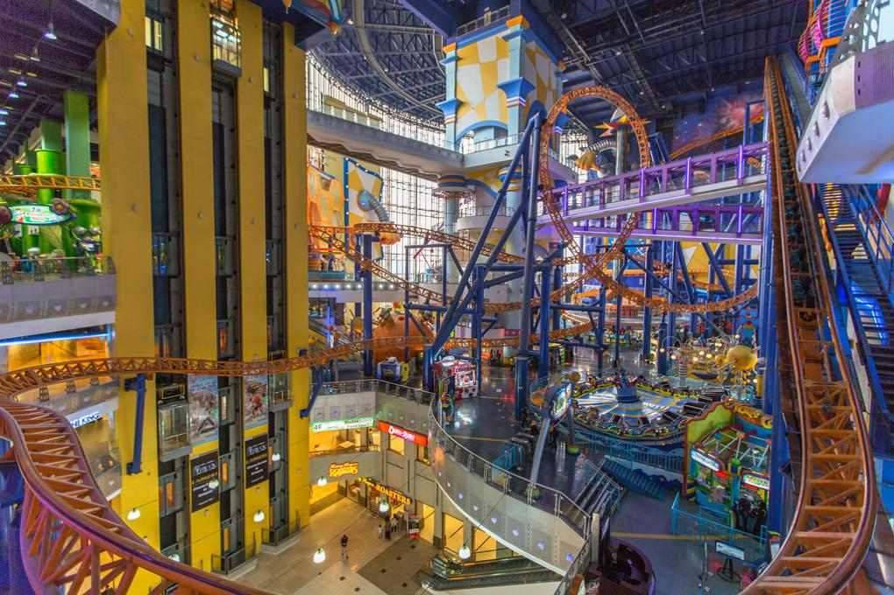

Examining factors at Berjaya Times Square Theme Park
A study of Berjaya Times Square Theme Park

Berjaya Times Square Theme Park - Malaysia's premier indoor entertainment destination
This study investigates the association between guest satisfaction and the intent to return at Berjaya Times Square Theme Park in Kuala Lumpur. As Malaysia's leading indoor theme park destination, understanding what drives customer loyalty is key to outperforming in the tourism and entertainment fields. The research examines elements like service quality, attraction diversity, park cleanliness, ticket prices, and staff attentiveness.
of visitors reported being satisfied with their experience
expressed intention to revisit the theme park
rated staff friendliness as excellent or very good
Queue times for popular attractions negatively impact visitor experience.
Some visitors perceive ticket prices as not matching the value received.
Limited variety and high prices of food and beverage offerings.
Some visitors noted wear and tear on certain attractions.

Exciting entrance area

Thrilling roller coasters

Family-friendly attractions

Unique environment